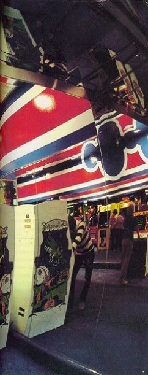

Back
to the previous page
Back
to the previous page|  Computer games, played in arcades like this one in Massachusetts, are becoming a new national sport.
The 'intelligent' machines in game arcades are skillful teachers who never let you win, but always let you learn to do better |
"It's easy to get isolated and become a
hermit with computers," a young games programmer named Dave had told
me the night before. We were in his den, with starfields exploding on the
screen of his desk-top Atari 800, and the world ending in a shower of nuclear
warheads on the upright Missile Command module in the corner, its computer
patiently playing against itself in the absence of a human opponent. Now,
the morning after, we are entering the hermitage.
The sun that once ripened apricots here is rising over California's "Silicon Valley," an area south of San Francisco Bay where computer 'plants now thrive in industrial parks. Inside the engineering headquarters of Atari, the world's first manufacturer of coin-operated video games, Dave finds a computer printout waiting for him on his desk. His office space is a paneled cell, as fit for contemplation as the cells of medieval hermits, with a small chalk board on one wall. He studies the printout to see whether the corrections he requested have been added to his program, a still sketchy set of instructions for a new game he is working on. Then he has his first brainstorm of the morning, grabs pencil and paper and begins writing: "Multi monster sequence. Every other wave: no friend. For each attack IF timer equals 4 THEN 'too slow,' exit monster mode. After monster is zapped, IF timer is 4 THEN reinitialize monster mode." "Is that programming language?" I ask. "Oh no," he says. "It's plain English." I have a feeling that I've been zapped. "We're making technology transparent" To most of us outside the computer culture, its initiates seem to live in a world so alien that they might as well be medieval hermits, or in some other time warp of their own. They appear in a popular campus poster as "nerds," whose heads are the only thing about them not screwed on backwards. But Dave is hardly a nerd. If anything, he is still the mischievous kid with tousled blond hair who liked physics and chemistry in high school but didn't like the titration experiments. "I liked to make the bombs and flares and stuff," he says. Only now he is making them into electronic fantasies, and is far happier than in the days when he worked for Bunker Ramo or National Semiconductor developing computerized check-out systems for supermarkets. He is working now at designing coin-operated video games, among people who see technology itself as a game. "We're making technology essentially transparent," one Atarian says. "We're making it friendly," says another. "That has not been the point of view of the big business systems, or the military computer business, and it gives us an advantage in going into |
Back
to the previous page
Continue to the next page